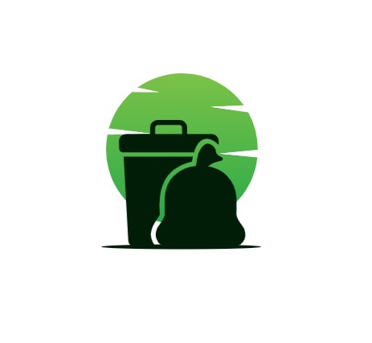

WASTE
WISE
WONDER

WASTE WISE WONDER
HOME
GAMES
Reach Us
Educational
Available Questions in Community
Some existing questions and answers.
HOW OFTEN WILL MY BIN BE COLLECTED ?
Answered
We offer our customers a choice of daily, weekly, or fortnightly collections – so your bins are emptied as often as you want. Our expert team can advise on the correct waste collection schedule based on the type and amount of waste you produce. and your business needs – such as your bin storage space and location.
What type of wheelie bins are available?
Answered
A range of two and four-wheel bins are available to store all sorts of waste on your premises. Explore our bins to see all available bins and information about what types and amounts of waste they can hold.
Can I reduce the number of bins I use?
Answered
Your business might not need as many bins delivering and collecting if you’ve cut back on the amount of waste you’re producing or have increased your recycling. We can help work out the best solution for your needs
Do companies provide free bins?
Answered
Yes, firms provide all bins, bags, and containers for your waste free of charge – you just pay for collection. There are no hidden hire or rental charges for your bins, so you know exactly what your waste collections cost.